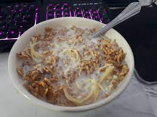

Ceral!!!

MMMM Yummy Ceral. Goof for altimate brekfaest!
Brother saed he wuld leht mi cok brekfast.
Yoo ned:
- Cerel
- Malk
- Spahgeti
- Bowel
- Spon
Leht mi tell yoo how too maek:
- Put ceral in bowel.
- Put malk in ceral.
- Make spahgeti in ceral.
- Mix wit spon
- Eat yummy ceral!
Source: Reddit.